Александр Белькевич
Senior разработчик · EMCD Tech LTD
АстраханьЦелый день про технологии, людей и идеи, которые двигают нас вперёд.
ДевФест – это глобальное событие, проводимое по всему миру сообществами GDG. В рамках данного события происходит представление и обсуждение последних технологий и разработок в сфере ИТ. Это мероприятие будет интересно разработчикам, ИТ-специалистам, студентам ИТ-специальностей и всем, кто неравнодушен к современным технологиям. В нашем регионе мероприятие будет проходить в восьмой раз.
Senior разработчик · EMCD Tech LTD
Астрахань
Team Lead · Т-Банк
Астрахань
SRE · Dodo Engineering
Москва
Программист · Digital Spirit
Астрахань
CEO · Codderz
Астрахань
Руководитель HR-направления · Бест
Астрахань
CTO · Adeptik
Астрахань
Разработчик ПО · Drive2
Астрахань
Junior Fullstack Developer
Москва
Руководитель финансовых проектов · Самолет Плюс
Астрахань
Старший программист · Positive Technologies
Астрахань
Директор по цифровизации · ДК «РАЗУМ»
АстраханьDevFest Astrakhan пройдёт 21 ноября 2026. Для всех студентов действует скидка в 50 % на любой билет. Для этого необходимо заполнить форму и прикрепить документ, подтверждающий статус студента (студенческий билет, зачётную книжку или справку из учебного заведения). После подтверждения промокод на скидку придёт на адрес электронной почты.
Видео с ДевФест Астрахань 2025 и фотографии с мероприятия 2025 года — чтобы сразу почувствовать атмосферу.
Институт развития образования «ПЛАТФОРМА»
г. Астрахань, ул. Ульяновых, 4.
Партнёры помогают делать конференцию больше: поддерживают площадку, подарки участникам, кофе-брейки и активности.
Стать партнёромДевФест в Астрахани делает локальное ИТ-сообщество. Мы собираем программу, спикеров, партнёров и всё, что происходит на площадке 21 ноября.

Сообщество разработчиков и людей, которым интересны технологии. Проводим митапы, конференции и другие события для локального ИТ-сообщества.
GDG Astrakhan